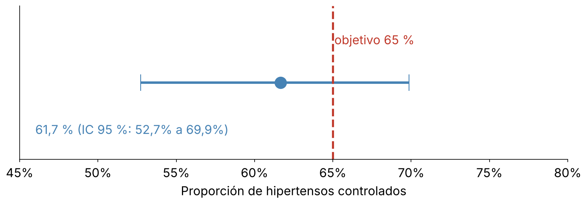
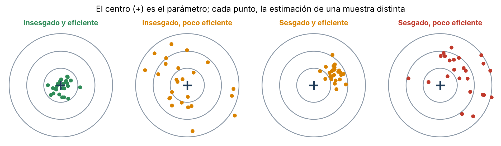
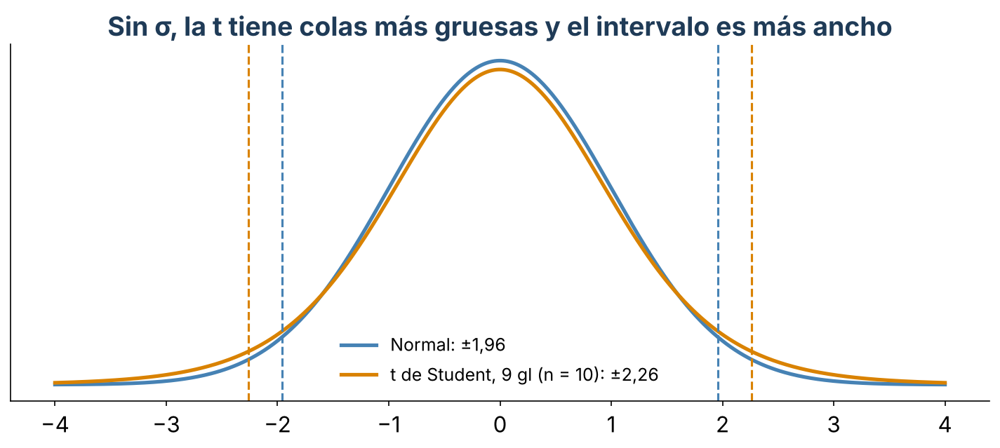
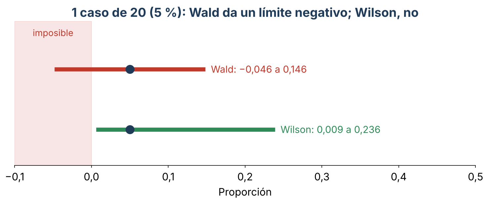
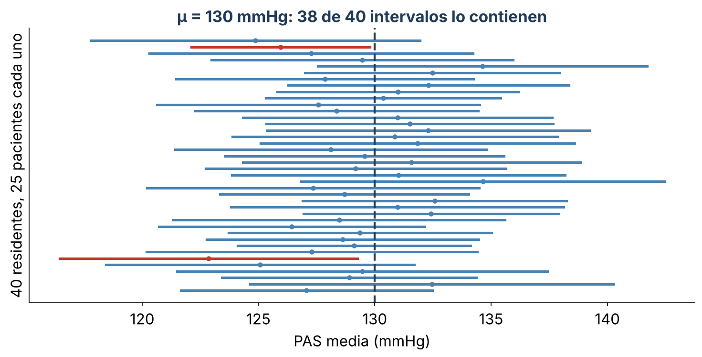
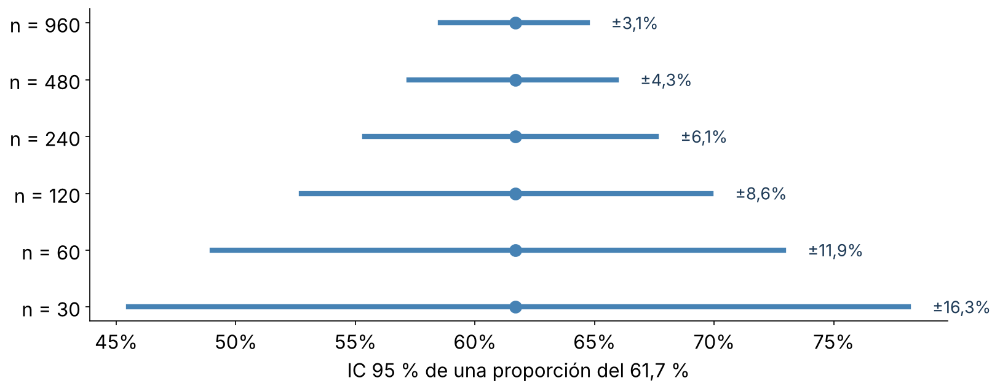

Bioestadística (1964) · Grado en Medicina · Curso 2027-2028
Tema 200Estimación puntual e intervalos de confianza
Módulo 5. Generalización de conclusiones
Evaluación: el examen del Módulo 5 se hace con Colab. Practica ejecutando e interpretando cada análisis.
Fernando Borrás Rocher · Universidad Miguel Hernández de Elche · CC BY 4.0
Objetivos de aprendizaje
Al terminar esta sesión serás capaz de:
- Distinguir un parámetro de su estimador y describir las propiedades de un buen estimador.
- Calcular e interpretar el intervalo de confianza de una media con la distribución t de Student.
- Calcular el intervalo de confianza de una proporción con los métodos de Wald y de Wilson, y saber cuándo usar cada uno.
- Interpretar correctamente un intervalo de confianza del 95 %.
- Explicar de qué depende la anchura de un intervalo.
- Calcular el tamaño muestral necesario para estimar una media o una proporción con una precisión dada.
Cómo usar esta presentación
Usa el selector de arriba para dar el tema en una sesión completa o en dos sesiones intercaladas.
🎓 Sesión de clase magistral
- 1. Caso clínico de partida 5 min
- 2. Conceptos clave 10 min
- 5. Autoevaluación 5 min
Explica los conceptos, haz la pausa activa y cierra con las ideas clave.
💻 Sesión de Colab
- 3. Demostración: estimar con incertidumbre 20 min
- 4. Práctica en la app Bioestadística 10 min
- 5. Autoevaluación 5 min
Cada estudiante abre su copia del cuaderno, predice el resultado y después ejecuta la celda.
Teclas: ← → para pasar · N notas del profesor · M cambiar de modo · F pantalla completa · Esc índice.
1. Caso clínico de partida
74 de 120 hipertensos controlados: ¿cumplimos el objetivo del 65 %?

- 61,7 % es una estimación: con otros 120 pacientes saldría otra cifra.
- El IC 95 % (52,7 % a 69,9 %) incluye el objetivo: con 120 pacientes no se puede afirmar ni negar que se cumpla.
2. Conceptos clave
2.1 Parámetro, estimador y estimación

| Concepto | Definición | Ejemplo |
|---|---|---|
| Parámetro | Valor desconocido de la población | Proporción real de hipertensos controlados, p |
| Estimador | Fórmula que se aplica a la muestra | Proporción muestral, $\hat{p} = x/n$ |
| Estimación puntual | Valor que da el estimador en una muestra concreta | $\hat{p}$ = 74/120 = 0,617 |
| Estimación por intervalo | Rango de valores compatibles con los datos | IC 95 %: 0,527 a 0,699 |
Un buen estimador tiene tres propiedades. Es insesgado: su distribución muestral está centrada en el parámetro. Es eficiente: tiene poca variabilidad. Es consistente: se acerca al parámetro al aumentar n. La media y la proporción muestrales cumplen las tres propiedades.
2. Conceptos clave
2.2 Intervalo de confianza de una media

Como no se conoce σ, se usa s y la distribución t de Student con n − 1 grados de libertad. Sus colas son algo más gruesas que las de la normal, para compensar esa incertidumbre adicional:
$$IC_{95\%} = \bar{x} \pm t_{0{,}975;\, n-1} \cdot \frac{s}{\sqrt{n}}$$
Con n grande, $t_{0,975}$ se acerca a 1,96. Con n = 10 vale 2,26.
2. Conceptos clave
2.3 Intervalo de confianza de una proporción

Método de Wald (el de los libros clásicos):
$$IC_{95\%} = \hat{p} \pm 1{,}96\sqrt{\frac{\hat{p}(1-\hat{p})}{n}}$$
Funciona mal con muestras pequeñas o con proporciones cercanas a 0 o a 1. Puede dar límites negativos o mayores de 1, y su cobertura real es inferior al 95 %. El método de Wilson corrige estos problemas y es el recomendado en general.
2. Conceptos clave
2.4 Qué significa «confianza del 95 %»
El 95 % se refiere al método, no a un intervalo concreto

- Si cada residente calcula su IC 95 %, unos 95 de cada 100 intervalos contienen el valor real.
- Nadie sabe si su intervalo es de los que fallan: por eso se habla de confianza.
2. Conceptos clave
2.5 De qué depende la anchura
Más pacientes, intervalo más estrecho (pero despacio)

- La anchura depende de 1/√n: para reducirla a la mitad hay que multiplicar n por 4.
- También crece con la variabilidad y con el nivel de confianza.
Pausa activa
Piensa 30 segundos, comenta con quien tienes al lado y vota.
Un estudio da una media de colesterol LDL de 128 mg/dL (IC 95 %: 122 a 134). ¿Qué afirmación es correcta?
En la sesión de Colab
Lo que acabas de ver se comprueba con datos en el cuaderno del Tema 200.
- Abre el cuaderno y guarda tu copia: Archivo → Guardar una copia en Drive.
- Ejecuta la celda de configuración.
- Ve a la demostración y predice cada resultado antes de ejecutar.
3. Demostración: estimar con incertidumbre
3.1 Intervalo de confianza de una media, a mano y con scipy
▶ En tu cuaderno: 3.1 Intervalo de confianza de una media, a mano y con scipy. Antes de ejecutar, escribe qué esperas obtener.
En 10 pacientes con insuficiencia renal crónica, la hemoglobina (g/dL) es: 10,2 · 11,5 · 9,8 · 12,1 · 10,7 · 11,0 · 9,5 · 10,9 · 11,8 · 10,4.
A mano: $\bar{x}$ = 10,79; s = 0,85; EE = 0,85 / √10 = 0,268; $t_{0,975;9}$ = 2,262; margen = 2,262 × 0,268 = 0,61. IC 95 %: 10,18 a 11,40 g/dL.
import numpy as np
from scipy import stats
hb = np.array([10.2, 11.5, 9.8, 12.1, 10.7, 11.0, 9.5, 10.9, 11.8, 10.4])
n, media, s = len(hb), hb.mean(), hb.std(ddof=1)
ee = s / np.sqrt(n)
t = stats.t.ppf(0.975, df=n - 1)
print(f"Media {media:.2f} · s {s:.2f} · EE {ee:.3f} · t {t:.3f}")
print(f"IC 95 % a mano: {media - t * ee:.2f} a {media + t * ee:.2f} g/dL")
print("IC 95 % con scipy:", np.round(stats.t.interval(0.95, df=n - 1, loc=media, scale=ee), 2))3. Demostración: estimar con incertidumbre
3.2 Qué significa el 95 %: cien residentes
▶ En tu cuaderno: 3.2 Qué significa el 95 %: cien residentes. Antes de ejecutar, escribe qué esperas obtener.
Simulamos que 100 residentes estiman la PAS media de una población con μ = 130 mmHg, cada uno con su muestra de 25 pacientes.
import matplotlib.pyplot as plt
rng = np.random.default_rng(seed=200)
mu, sigma, n = 130, 15, 25
plt.figure(figsize=(8, 6))
fallos = 0
for i in range(100):
muestra = rng.normal(mu, sigma, n)
li, ls = stats.t.interval(0.95, df=n - 1, loc=muestra.mean(), scale=muestra.std(ddof=1) / np.sqrt(n))
contiene = li <= mu <= ls
fallos += not contiene
plt.plot([li, ls], [i, i], color="steelblue" if contiene else "firebrick", linewidth=1.5)
plt.axvline(mu, color="black", linestyle="--", label="μ = 130 mmHg")
plt.xlabel("Presión arterial sistólica (mmHg)")
plt.ylabel("Residente")
plt.title(f"100 intervalos de confianza del 95 %: {100 - fallos} contienen μ")
plt.legend()
plt.show()Cada residente obtiene un intervalo distinto. Casi todos contienen μ; unos pocos (en rojo) no, y ninguno de ellos sabe si su intervalo es de los que fallan. Esa es la incertidumbre que el intervalo de confianza hace explícita.
3. Demostración: estimar con incertidumbre
3.3 Intervalo de confianza de una proporción: el caso
▶ En tu cuaderno: 3.3 Intervalo de confianza de una proporción: el caso. Antes de ejecutar, escribe qué esperas obtener.
from statsmodels.stats.proportion import proportion_confint
controlados, n = 74, 120
print(f"Proporción estimada: {controlados / n:.3f}")
for metodo in ["normal", "wilson"]:
li, ls = proportion_confint(controlados, n, alpha=0.05, method=metodo)
nombre = "Wald" if metodo == "normal" else "Wilson"
print(f"IC 95 % {nombre:>6}: {li:.3f} a {ls:.3f}")Con 120 pacientes y una proporción intermedia, los dos métodos casi coinciden. El objetivo del 65 % queda dentro del intervalo. Los datos son compatibles con un control inferior al objetivo y también con uno superior.
3. Demostración: estimar con incertidumbre
3.4 Cuando Wald falla: proporciones extremas
▶ En tu cuaderno: 3.4 Cuando Wald falla: proporciones extremas. Antes de ejecutar, escribe qué esperas obtener.
En un ensayo con 40 pacientes, 1 sufre una reacción alérgica. Estimamos la proporción:
p_hat = 1 / 40
margen = 1.96 * np.sqrt(p_hat * (1 - p_hat) / 40)
print(f"IC 95 % Wald (fórmula): {p_hat - margen:.3f} a {p_hat + margen:.3f}")
li, ls = proportion_confint(1, 40, alpha=0.05, method="wilson")
print(f"IC 95 % Wilson: {li:.3f} a {ls:.3f}")Wald da un límite inferior negativo, que no tiene sentido para una proporción. Wilson da un intervalo asimétrico y coherente. Usa Wilson salvo que n sea grande y la proporción esté lejos de 0 y de 1.
3. Demostración: estimar con incertidumbre
3.5 La exactitud de un modelo de IA, con su intervalo
▶ En tu cuaderno: 3.5 La exactitud de un modelo de IA, con su intervalo. Antes de ejecutar, escribe qué esperas obtener.
Un modelo de lenguaje responde a 50 preguntas de examen de Cardiología y acierta 41 (82 %). ¿Qué podemos decir de su exactitud en el conjunto de preguntas de ese tipo?
li, ls = proportion_confint(41, 50, method="wilson")
print(f"Exactitud: 82 % (IC 95 %: {li:.1%} a {ls:.1%})")Un 82 % de exactitud sobre 50 preguntas es compatible con una exactitud real de entre el 69 % y el 90 %. A veces, un artículo o un fabricante da la exactitud de un modelo de IA sin intervalo y sin el número de preguntas. Con esa cifra no se puede saber cuánta incertidumbre tiene.
3. Demostración: estimar con incertidumbre
3.6 La anchura depende del tamaño muestral
▶ En tu cuaderno: 3.6 La anchura depende del tamaño muestral. Antes de ejecutar, escribe qué esperas obtener.
tamanos = [30, 60, 120, 240, 480, 960]
anchuras = []
for n in tamanos:
li, ls = proportion_confint(round(0.617 * n), n, method="wilson")
anchuras.append(ls - li)
print(f"n = {n:>3}: IC 95 % de {li:.3f} a {ls:.3f} (anchura {ls - li:.3f})")3. Demostración: estimar con incertidumbre
3.7 ¿Cuántos pacientes hacen falta?
▶ En tu cuaderno: 3.7 ¿Cuántos pacientes hacen falta?. Antes de ejecutar, escribe qué esperas obtener.
Para estimar una proporción con un margen de error e (la mitad de la anchura del intervalo) y una confianza del 95 %:
$$n = \frac{1{,}96^2 \cdot p(1-p)}{e^2}$$
Si no se conoce p, se usa p = 0,5, que da el n más grande (la opción más prudente).
Para una media, con desviación típica esperada σ: $n = \left(\dfrac{1{,}96\,\sigma}{e}\right)^2$.
A mano: para estimar el control de la hipertensión con un margen de ±5 puntos, suponiendo p = 0,6: n = 1,96² × 0,6 × 0,4 / 0,05² ≈ 369 pacientes.
import math
def n_proporcion(p, margen, z=1.96):
return math.ceil(z ** 2 * p * (1 - p) / margen ** 2)
def n_media(sigma, margen, z=1.96):
return math.ceil((z * sigma / margen) ** 2)
print("Proporción, p = 0,6, margen ±5 %:", n_proporcion(0.6, 0.05))
print("Proporción, p desconocida, margen ±5 %:", n_proporcion(0.5, 0.05))
print("Media de PAS, σ = 15 mmHg, margen ±2 mmHg:", n_media(15, 2))Ampliación
Ampliación: el intervalo de confianza de una media en la cohorte
import pandas as pd
cohorte = pd.read_csv("https://raw.githubusercontent.com/fborrasumh/bioestadistica/main/datos/cohorte_limpia.csv")
for variable, unidad in [("pas_mmHg", "mmHg"), ("imc", "kg/m²"), ("hdl_mg_dl", "mg/dL")]:
x = cohorte[variable].dropna()
li, ls = stats.t.interval(0.95, df=len(x) - 1, loc=x.mean(), scale=x.std() / np.sqrt(len(x)))
print(f"{variable:>10}: media {x.mean():.1f} {unidad} (IC 95 %: {li:.1f} a {ls:.1f}) · n = {len(x)}")Así se comunica una estimación en un artículo: estimación puntual, intervalo de confianza y tamaño de la muestra.
Ampliación
Ampliación: errores frecuentes
Dar una estimación sin su intervalo de confianza.
Interpretar el IC como el rango de valores de los pacientes. Eso es el intervalo de referencia.
Usar el método de Wald con proporciones extremas o muestras pequeñas.
Usar 1,96 en lugar de t con muestras pequeñas: el intervalo sale demasiado estrecho.
Calcular el IC con la desviación típica en lugar del error estándar.
Pensar que un IC del 99 % es «mejor» que uno del 95 %: es más seguro, pero menos preciso.
Ampliación
Ampliación: Intervalos unilaterales e intervalo de una varianza
Intervalo unilateral. A veces solo importa un lado. Por ejemplo: «el colesterol medio no supera X». El intervalo unilateral al 95 % pone todo el 5 % de error en un lado. Por eso usa el valor crítico de 0,05, no el de 0,025. Decide si es unilateral antes de ver los datos.
Intervalo de una varianza. La precisión de una DE también se estima. Si la variable es normal, el intervalo usa la distribución ji cuadrado con n − 1 grados de libertad. Este intervalo es muy sensible a la falta de normalidad.
En tus materiales SIMUSTAT: Tema 340. Intervalos de confianza, apartado 3. En tus materiales SIMUSTAT: Tema 390. Inferencia de una media poblacional, apartado 4.
col = cohorte["colesterol_mg_dl"].dropna()
n, media, de = len(col), col.mean(), col.std()
ee = de / np.sqrt(n)
t_bil, t_uni = stats.t.ppf(0.975, n - 1), stats.t.ppf(0.95, n - 1)
print(f"n = {n}, media = {media:.1f} mg/dL, DE = {de:.1f} mg/dL")
print(f"IC 95 % bilateral: {media - t_bil * ee:.1f} a {media + t_bil * ee:.1f} mg/dL")
print(f"Límite superior unilateral 95 %: la media es como máximo {media + t_uni * ee:.1f} mg/dL")
chi_inf, chi_sup = stats.chi2.ppf([0.025, 0.975], n - 1)
var_ic = ((n - 1) * de**2 / chi_sup, (n - 1) * de**2 / chi_inf)
print(f"IC 95 % de la DE: {np.sqrt(var_ic[0]):.1f} a {np.sqrt(var_ic[1]):.1f} mg/dL")El límite unilateral queda más cerca de la media que el límite superior bilateral. El intervalo de la DE no es simétrico, porque la ji cuadrado es asimétrica.
4. Práctica en la app Bioestadística
Abre la unidad 200 de la app Bioestadística y completa sus misiones:
- Misión básica (sin asistente): interpretar correctamente cinco intervalos de confianza tomados de resúmenes de artículos.
- Misión clínica (con pistas): estimar con su IC 95 % la prevalencia de obesidad y el colesterol LDL medio de la cohorte. Calcular el tamaño muestral para repetir el estudio con más precisión.
- Misión reto (con asistente): evaluar un modelo de IA con 30 preguntas y dar su exactitud con IC de Wilson. Calcular cuántas preguntas harían falta para un margen de ±5 puntos.
Al terminar, exporta el informe de la unidad.
5. Autoevaluación
Responde sin asistente.
5. Autoevaluación
Elige una opción: verás la explicación.
Un estudio da una media de colesterol LDL de 128 mg/dL (IC 95 %: 122 a 134). ¿Qué afirmación es correcta?
Con el mismo nivel de confianza, ¿cómo cambia la anchura del IC de una media si la muestra pasa de 100 a 400 pacientes?
En 25 pacientes, 0 presentan una complicación. ¿Qué método de IC de la proporción es más adecuado?
¿Qué pasa con la anchura del IC si se pasa de un nivel de confianza del 95 % al 99 %?
Quieres estimar una prevalencia desconocida con un margen de ±10 puntos y 95 % de confianza. ¿Cuántos pacientes necesitas aproximadamente?
Ideas clave
- Toda estimación se acompaña de su intervalo de confianza y del tamaño de la muestra.
- IC de una media: $\bar{x} \pm t \cdot s/\sqrt{n}$; IC de una proporción: preferiblemente Wilson.
- El 95 % se refiere al método: el 95 % de los intervalos así construidos contiene el parámetro.
- La anchura disminuye con n, aumenta con la variabilidad y con el nivel de confianza.
- El tamaño muestral se calcula antes del estudio a partir de la precisión deseada.
Glosario
| Término | Definición |
|---|---|
| Parámetro | Valor numérico desconocido de la población |
| Estimador | Fórmula que se aplica a la muestra para aproximar un parámetro |
| Estimación puntual | Valor único que estima un parámetro |
| Intervalo de confianza | Rango de valores que, con un método dado, contiene el parámetro en una proporción conocida de las muestras |
| Nivel de confianza | Proporción de intervalos que contendrían el parámetro si se repitiera el muestreo |
| Distribución t de Student | Distribución que se usa en lugar de la normal cuando se estima σ con la muestra |
| Grados de libertad | Número de valores que pueden variar libremente; en el IC de una media, n − 1 |
| Margen de error | Mitad de la anchura del intervalo de confianza |
| Método de Wilson | Método recomendado para el IC de una proporción |
Para saber más
- Gardner MJ, Altman DG. Confidence intervals rather than P values: estimation rather than hypothesis testing. Br Med J (Clin Res Ed). 1986;292(6522):746-750. doi:10.1136/bmj.292.6522.746
- Brown LD, Cai TT, DasGupta A. Interval estimation for a binomial proportion. Stat Sci. 2001;16(2):101-133. doi:10.1214/ss/1009213286
- SIMUSTAT Unidigital UMH. Tema 340. Intervalos de confianza. Cuaderno de Google Colab. Elche: Universidad Miguel Hernández; 2023.
- SIMUSTAT Unidigital UMH. Tema 390. Inferencia de una media poblacional. Cuaderno de Google Colab. Elche: Universidad Miguel Hernández; 2023.